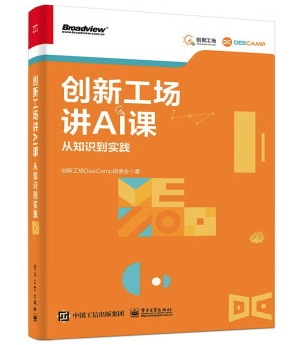

Publications
For a complete list of my publications, please visit my Google Scholar Profile.
* indicates equal contributions. 
-
创新工场讲AI课：从知识到实践 (Chinese)李开复, 王咏刚, 张潼, 宋彦, 屠可伟, 张发恩, 唐剑, 张弥, 吴佳洪, 刘宁.
电子工业出版社, 2021.
[Purchase Link] -
FedAudio: A Federated Learning Benchmark for Audio TasksTuo Zhang, Tiantian Feng, Samiul Alam, Sunwoo Lee, Mi Zhang, Shrikanth S. Narayanan, and Salman Avestimehr
[Paper] -
FedRolex: Model-Heterogeneous Federated Learning with Rolling Sub-Model ExtractionSamiul Alam, Luyang Liu, Ming Yan, and Mi Zhang.
Conference on Neural Information Processing Systems (NeurIPS'22).
Acceptance Rate: 2665/10411 = 25.6%
[Paper | BibTex | Code｜ Poster] -
Deep AutoAugmentYu Zheng, Zhi Zhang, Shen Yan, and Mi Zhang.
International Conference on Learning Representations (ICLR'22).
Acceptance Rate: 1095/3391 = 32.3%
[Paper | BibTex | Code｜ Leaderboard | Poster | Slides]
Media Coverage: [Synced] -
Multiview Transformers for Video RecognitionShen Yan, Xuehan Xiong, Anurag Arnab, Zhichao Lu, Mi Zhang, Chen Sun, Cordelia Schmid.
IEEE/CVF Conference on Computer Vision and Pattern Recognition (CVPR'22).
Acceptance Rate: 2067/8161 = 25.3%
[Paper | BibTex | Code | Leaderboard] -
PyramidFL: A Fine-grained Client Selection Framework for Efficient Federated LearningChenning Li, Xiao Zeng, Mi Zhang, and Zhichao Cao.
ACM International Conference on Mobile Computing and Networking (MobiCom'22).
Acceptance Rate: 56/314 = 17.8%
[Paper | BibTex] -
FedSEA: A Semi-Asynchronous Federated Learning Framework for Extremely Heterogeneous DevicesJingwei Sun, Ang Li, Lin Duan, Samiul Alam, Xuliang Deng, Xin Guo, Haiming Wang, Maria Gorlatova, Mi Zhang, Hai Li, Yiran Chen.
ACM Conference on Embedded Networked Sensor Systems (SenSys'22).
Acceptance Rate: 52/208 = 25%
[Paper | BibTex] -
FedTune: Automatic Tuning of Federated Learning Hyper-Parameters from System PerspectiveHuanle Zhang, Mi Zhang, Xin Liu, Prasant Mohapatra, and Michael Delucia.
IEEE Military Communications Conference (MILCOM'22).
[Paper | BibTex] -
Federated Learning for Internet of Things: Applications, Challenges, and OpportunitiesTuo Zhang, Lei Gao, Chaoyang He, Mi Zhang, Bhaskar Krishnamachari, and Salman Avestimehr.
IEEE Internet of Things Magazine (IEEE IoTM), 2022.
[Paper | BibTex] -
Ph.D. Thesis: New Perspectives in Neural Architecture Search: Architecture Embeddings, Efficient Performance Estimations, and their ApplicationsShen Yan, 2022.
-
CATE: Computation-aware Neural Architecture Encoding with TransformersShen Yan, Kaiqiang Song, Fei Liu, and Mi Zhang.
International Conference on Machine Learning (ICML'21).
Acceptance Rate: 166/5513 = 3% (Long Talk)
[Paper | BibTex | Code | Poster | Presentation] -
Deep AutoAugmentYu Zheng, Zhi Zhang, Shen Yan, and Mi Zhang.
International Conference on Machine Learning (ICML'21) Workshop on Machine Learning for Data.
Note: the full version is accepted to ICLR'22. -
A Field Guide to Federated OptimizationJianyu Wang, Zachary Charles, Zheng Xu, Gauri Joshi, H. Brendan McMahan, Blaise Aguera y Arcas, Maruan Al-Shedivat, Galen Andrew, Salman Avestimehr, Katharine Daly, Deepesh Data, Suhas Diggavi, Hubert Eichner, Advait Gadhikar, Zachary Garrett, Antonious M. Girgis, Filip Hanzely, Andrew Hard, Chaoyang He, Samuel Horvath, Zhouyuan Huo, Alex Ingerman, Martin Jaggi, Tara Javidi, Peter Kairouz, Satyen Kale, Sai Praneeth Karimireddy, Jakub Konecny, Sanmi Koyejo, Tian Li, Luyang Liu, Mehryar Mohri, Hang Qi, Sashank J. Reddi, Peter Richtarik, Karan Singhal, Virginia Smith, Mahdi Soltanolkotabi, Weikang Song, Ananda Theertha Suresh, Sebastian U. Stich, Ameet Talwalkar, Hongyi Wang, Blake Woodworth, Shanshan Wu, Felix X. Yu, Honglin Yuan, Manzil Zaheer, Mi Zhang, Tong Zhang, Chunxiang Zheng, Chen Zhu, Wennan Zhu.
[Paper | BibTex] -
Mercury: Efficient On-Device Distributed DNN Training via Stochastic Importance SamplingXiao Zeng, Ming Yan, and Mi Zhang.
ACM Conference on Embedded Networked Sensor Systems (SenSys'21).
Acceptance Rate: 25/139 = 18%
[Paper | BibTex] -
FedMask: Joint Computation and Communication-Efficient Personalized Federated Learning via Heterogeneous MaskingAng Li, Jingwei Sun, Xiao Zeng, Mi Zhang, Hai Li, and Yiran Chen.
ACM Conference on Embedded Networked Sensor Systems (SenSys'21).
Acceptance Rate: 25/139 = 18%
[Paper | BibTex] -
NELoRa: Towards Ultra-low SNR LoRa Communication with Neural-enhanced DemodulationChenning Li, Hanqing Guo, Shuai Tong, Xiao Zeng, Zhichao Cao, Mi Zhang, Qiben Yan, Li Xiao, Jiliang Wang, and Yunhao Liu.
ACM Conference on Embedded Networked Sensor Systems (SenSys'21).
Acceptance Rate: 25/139 = 18%
Best Paper Award | ACM SIGMOBILE Research Highlight [Highlight Article]
[Paper | BibTex] -
DeepLoRa: Learning Accurate Path Loss Model for Long Distance Links in LPWANLi Liu, Yuguang Yao, Zhichao Cao, and Mi Zhang.
IEEE International Conference on Computer Communications (INFOCOM'21).
Acceptance Rate: 252/1266 = 19.9%
[Paper | BibTex] -
Towards Position-Independent Sensing for Gesture Recognition with Wi-FiRuiyang Gao, Mi Zhang, Jie Zhang, Yang Li, Enze Yi, Dan Wu, Leye Wang, and Daqing Zhang.
ACM International Joint Conference on Pervasive and Ubiquitous Computing (UbiComp'21).
[Paper | BibTex] -
Ph.D. Thesis: Collaborative Distributed Deep Learning Systems on the EdgesXiao Zeng, 2021.
-
Does Unsupervised Architecture Representation Learning Help Neural Architecture Search?Shen Yan, Yu Zheng, Wei Ao, Xiao Zeng, and Mi Zhang.
Conference on Neural Information Processing Systems (NeurIPS'20).
Acceptance Rate: 1900/9454 = 20.1%
[Paper | BibTex | Code | Poster | Presentation] -
FedML: A Research Library and Benchmark for Federated Machine LearningChaoyang He, Songze Li, Jinhyun So, Xiao Zeng, Mi Zhang, Hongyi Wang, Xiaoyang Wang, Praneeth Vepakomma, Abhishek Singh, Hang Qiu, Li Shen, Peilin Zhao, Yan Kang, Yang Liu, Ramesh Raskar, Qiang Yang, Murali Annavaram, Salman Avestimehr.
Conference on Neural Information Processing Systems (NeurIPS'20) Federated Learning Workshop (Spotlight).
Best Paper Award
[Paper | BibTex | Code] -
MutualNet: Adaptive ConvNet via Mutual Learning from Network Width and ResolutionTaojiannan Yang, Sijie Zhu, Chen Chen, Shen Yan, Mi Zhang, and Andrew Willis.
European Conference on Computer Vision (ECCV'20).
Acceptance Rate: 104/5025 = 2% (Oral)
[Paper | BibTex | Code] -
FlexDNN: Input-Adaptive On-Device Deep Learning for Efficient Mobile VisionBiyi Fang, Xiao Zeng, Faen Zhang, Hui Xu, and Mi Zhang.
ACM/IEEE Symposium on Edge Computing (SEC'20).
Acceptance Rate: 21/96 = 21.9%
Best Paper Award Nominee
[Paper | BibTex] -
Distream: Scaling Live Video Analytics with Workload-Adaptive Distributed Edge IntelligenceXiao Zeng, Biyi Fang, Haichen Shen, and Mi Zhang.
ACM Conference on Embedded Networked Sensor Systems (SenSys'20).
Acceptance Rate: 43/213 = 20.2%
[Paper | BibTex] -
Wi-Fi See It All: Generative Adversarial Network-augmented Versatile Wi-Fi ImagingChenning Li, Zheng Liu, Yuguang Yao, Zhichao Cao, Mi Zhang, and Yunhao Liu.
ACM Conference on Embedded Networked Sensor Systems (SenSys'20).
Acceptance Rate: 43/213 = 20.2%
[Paper | BibTex] -
SecWIR: Securing Smart Home IoT Communications via Wi-Fi Routers with Embedded IntelligenceXinyu Lei, Guan-Hua Tu, Chi-Yu Li, Tian Xie, and Mi Zhang.
ACM International Conference on Mobile Systems, Applications, and Services (MobiSys'20).
Acceptance Rate: 34/175 = 19.4%
[Paper | BibTex] -
SCYLLA: QoE-aware Continuous Mobile Vision with FPGA-based Dynamic Deep Neural Network ReconfigurationShuang Jiang, Zhiyao Ma, Xiao Zeng, Chenren Xu, Mi Zhang, Chen Zhang, and Yunxin Liu.
IEEE International Conference on Computer Communications (INFOCOM'20).
Acceptance Rate: 268/1354 = 19.8%
[Paper | BibTex] -
Deep Learning in the Era of Edge Computing: Challenges and OpportunitiesMi Zhang, Faen Zhang, Nicholas D. Lane, Yuanchao Shu, Xiao Zeng, Biyi Fang, Shen Yan, and Hui Xu.
Book chapter in Fog Computing: Theory and Practice, Wiley, 2020.
Invited Article
[Paper | BibTex] -
DQS: A Framework for Designing Tiny Neural Networks for On-Device AIYu Zheng*, Shen Yan*, and Mi Zhang.
Conference on Neural Information Processing Systems (NeurIPS'19) Google MicroNet Challenge.
Google MicroNet Challenge (CIFAR-100 Track) 4th Place Winner (1st Place in U.S. and Canada)
[Code]
Media Coverage: [MSU Today] -
HM-NAS: Efficient Neural Architecture Search via Hierarchical MaskingShen Yan, Biyi Fang, Faen Zhang, Yu Zheng, Xiao Zeng, Hui Xu, and Mi Zhang.
International Conference on Computer Vision (ICCV'19) Neural Architects Workshop.
Best Paper Award Nominee
[Paper | BibTex]
Media Coverage: [JiQiZhiXin] -
Federated Learning: The Future of Distributed Machine LearningMi Zhang.
SyncedReview @ Medium, 2019.
[Link]
Invited Article -
AutoML Mobile: Automated ML Model Design for Every Mobile DeviceMi Zhang.
SyncedReview @ Medium, 2019.
[Link]
Invited Article -
Mobile Sensing of Alertness, Sleep, and Circadian Rhythm: Hardware and Software PlatformsAkane Sano, Tauhidur Rahman, Mi Zhang, Deepak Ganesan, and Tanzeem Choudhury.
ACM SIGMOBILE Mobile Computing and Communications Review (GetMobile), Volume 23, Issue 3, 2019.
Invited Article
[Paper | BibTex] -
Communication Challenges in the IoTMi Zhang, Xiaofan Jiang, and Steve Hodges.
IEEE Pervasive Computing Magazine (IEEE Pervasive Computing), Volume 18, Issue 1, 2019.
Impact Factor: 4.41
Guest Editors' Introduction -
Ph.D. Thesis: Adaptive On-device Deep Learning SystemsBiyi Fang, 2019.
-
NestDNN: Resource-Aware Multi-Tenant On-Device Deep Learning for Continuous Mobile VisionBiyi Fang*, Xiao Zeng*, and Mi Zhang.
ACM International Conference on Mobile Computing and Networking (MobiCom'18).
Acceptance Rate: 42/187 = 22.5%
[Paper | BibTex | Video]
Media Coverage: [JiQiZhiXin] -
Efficient Federated Learning via Variational DropoutWei Du, Xiao Zeng, Ming Yan, and Mi Zhang.
OpenReview
[Paper] -
The Dark Side of Operational Wi-Fi Calling ServicesTian Xie, Guan-Hua Tu, Chi-Yu Li, Chunyi Peng, Jiawei Li, and Mi Zhang.
IEEE Conference on Communications and Network Security (CNS'18).
Acceptance Rate: 52/181 = 28.7%
Best Paper Award | Google Security Reward
[Paper | BibTex] -
When Virtual Reality Meets Internet of Things in the Gym: Enabling Immersive Interactive Machine ExercisesFazlay Rabbi*, Taiwoo Park*, Biyi Fang, Mi Zhang, and Youngki Lee.
ACM International Joint Conference on Pervasive and Ubiquitous Computing (UbiComp'18).
[Paper | BibTex] -
When Mixed Reality Meets Internet of Things: Toward the Realization of Ubiquitous Mixed RealityTaiwoo Park, Mi Zhang, and Youngki Lee.
ACM SIGMOBILE Mobile Computing and Communications Review (GetMobile), Volume 22, Issue 1, 2018.
Invited Article
[Paper | BibTex] -
Exploring User Needs for a Mobile Behavioral-Sensing Technology for Depression Management: Qualitative StudyJingbo Meng, Syed Ali Hussain, David C. Mohr, Mary Czerwinski, and Mi Zhang.
Journal of Medical Internet Research (JMIR) Special Issue on Computing and Mental Health, 2018.
Impact Factor: 5.175
[Link | Paper | BibTex]
-
MobileDeepPill: A Small-Footprint Mobile Deep Learning System for Recognizing Unconstrained Pill ImagesXiao Zeng, Kai Cao, and Mi Zhang.
ACM International Conference on Mobile Systems, Applications, and Services (MobiSys'17).
Acceptance Rate: 34/188 = 18%
NIH Pill Image Recognition Challenge First Place Winner
[Paper | BibTex | Video]
Media Coverage: [NIH | ABC 7 (TV) | MSU Today] -
DeepASL: Enabling Ubiquitous and Non-Intrusive Word and Sentence-Level Sign Language TranslationBiyi Fang, Jillian Co, and Mi Zhang.
ACM Conference on Embedded Networked Sensor Systems (SenSys'17).
Acceptance Rate: 26/151 = 17%
[Paper | BibTex]
Media Coverage: [NSF (video) | MSU (video) | NVIDIA | Smithsonian | NPR (radio interview) | MSU Today | AAU | Futurity] -
SharpEar: Real-Time Speech Enhancement in Noisy Environments (Poster)Xiao Zeng, Kai Cao, Haochen Sun, and Mi Zhang.
ACM International Joint Conference on Pervasive and Ubiquitous Computing (UbiComp'17).
NSF Hearables Challenge Third Place Winner
Invited Presentation
Media Coverage: [NSF | ACM TechNews | MSU Today | AAU | R&D Magazine | The University Network] -
Personal Sensing: Understanding Mental Health Using Ubiquitous Sensors and Machine LearningDavid C. Mohr, Mi Zhang, and Stephen M. Schueller.
Annual Review of Clinical Psychology (ARCP), Volume 13, Pages 23-47, 2017.
Impact Factor: 12.214
Invited Article
[Link | Paper | BibTex] -
Helping Universities Combat Depression with Mobile TechnologyMi Zhang, David C. Mohr, and Jingbo Meng.
The Conversation, 2017.
Invited Article
[Link]
Media Coverage: [NSF (video) | Smithsonian | MSU Today | EdTech | Campus Technology | eCampusNews] -
BodyScan: Enabling Radio-based Sensing on Wearable Devices for Contactless Activity and Vital Sign MonitoringBiyi Fang, Nicholas D. Lane, Mi Zhang, Aidan Boran, and Fahim Kawsar.
ACM International Conference on Mobile Systems, Applications, and Services (MobiSys'16).
Acceptance Rate: 31/197 = 15.7%
[Paper | BibTex | Video] -
HeadScan: A Wearable System for Radio-based Sensing of Head and Mouth-related ActivitiesBiyi Fang, Nicholas D. Lane, Mi Zhang, and Fahim Kawsar.
ACM/IEEE International Conference on Information Processing in Sensor Networks (IPSN'16).
Acceptance Rate: 23/117 = 19.7%
[Paper | BibTex]
Media Coverage: [Stanford Medicine | MedGadget | Futurity | MSU Today | Fox 2 (TV interview) | ReadWrite] -
AirSense: An Intelligent Home-based Sensing System for Indoor Air Quality AnalyticsBiyi Fang, Qiumin Xu, Taiwoo Park, and Mi Zhang.
ACM International Joint Conference on Pervasive and Ubiquitous Computing (UbiComp'16).
Acceptance Rate: 114/481 = 23.7%
[Paper | BibTex]
Media Coverage: [The Atlantic | Futurity | MSU Today] -
DoppleSleep: A Contactless Unobtrusive Sleep Sensing System Using Short-Range Doppler RadarTauhidur Rahman, Alexander Adams, Ruth Ravichandran, Mi Zhang, Shwetak Patel, Julie Kientz, and Tanzeem Choudhury.
ACM International Joint Conference on Pervasive and Ubiquitous Computing (UbiComp'15).
Acceptance Rate: 93/394 = 23.6%
Best Paper Award Honorable Mention
[Paper | BibTex]
Media Coverage: [MIT Technology Review] -
MyBehavior: Automatic Personalized Health Feedback from User Behavior and Preference using SmartphonesMashfiqui Rabbi, Min Hane Aung, Mi Zhang, and Tanzeem Choudhury.
ACM International Joint Conference on Pervasive and Ubiquitous Computing (UbiComp'15).
Acceptance Rate: 93/394 = 23.6%
[Paper | BibTex]
Media Coverage: [MIT Technology Review | Mashable] -
Mobile Phone Sensor Correlates of Depressive Symptom Severity in Daily-Life Behavior: An Exploratory StudySohrob Saeb, Mi Zhang, Christopher J. Karr, Stephen M. Schueller, Marya E. Corden, Konrad P. Kording, and David C. Mohr.
Journal of Medical Internet Research (JMIR), Volume 17, Issue 7, Pages e175, 2015.
Impact Factor: 5.175
JMIR All-Time Top Article
[Link | Paper | BibTex]
Media Coverage: [TIME | CNN | TechCrunch | The Verge | CBS News | Fox News | Discovery News | Daily Mail | The Times | Newsweek | Mirror | The Telegraph | The Washington Post | The Huffington Post | Los Angeles Times | Chicago Tribune | Futurity | WebMD | US News] -
The Relationship between Clinical, Momentary, and Sensor-based Assessment of DepressionSohrob Saeb, Mi Zhang, Mary Kwasney, Christopher J. Karr, Konrad Kording, and David C. Mohr.
International Conference on Pervasive Computing Technologies for Healthcare (PervasiveHealth'15).
Acceptance Rate: 38%
[Paper | BibTex] -
Automated Personalized Feedback for Physical Activity and Dietary Behavior Change with Mobile Phones: A Randomized Controlled Trial on AdultsMashfiqui Rabbi, Angela Pfammatter, Mi Zhang, Bonnie Spring, and Tanzeem Choudhury.
Journal of Medical Internet Research (JMIR) mHealth and uHealth, Volume 3, Issue 2, Pages e42, 2015.
Impact Factor: 4.636
[Link | Paper | BibTex]
Media Coverage: [MobiHealth News] -
An Intelligent Crowd-Worker Selection Approach for Reliable Content Labeling of Food ImagesMashfiqui Rabbi, Jean Costa, Fabian Okeke, Max Schachere, Mi Zhang, and Tanzeem Choudhury.
ACM International Conference on Wireless Health (WH'15).
Acceptance Rate: 28/106 = 26.4%
[Paper | BibTex] -
BodyBeat: A Mobile System for Sensing Non-Speech Body SoundsTauhidur Rahman, Alexander Adams, Mi Zhang, Erin Cherry, Bobby Zhou, Huaishu Peng, and Tanzeem Choudhury.
ACM International Conference on Mobile Systems, Applications, and Services (MobiSys'14).
Acceptance Rate: 25/185 = 13.5%
ACM SIGMOBILE Research Highlight [Highlight Article]
[Paper | BibTex]
Media Coverage: [MIT Technology Review | Wall Street Journal | New Scientist] -
Towards Accurate Non-Intrusive Recollection of Stress Levels Using Mobile Sensing and Contextual RecallTauhidur Rahman, Mi Zhang, Stephen Voida, and Tanzeem Choudhury.
International Conference on Pervasive Computing Technologies for Healthcare (PervasiveHealth'14).
Acceptance Rate: 26%
[Paper | BibTex] -
Human Daily Activity Recognition with Sparse Representation Using Wearable SensorsMi Zhang and Alexander A. Sawchuk.
IEEE Journal of Biomedical and Health Informatics (J-BHI), Volume 17, Issue 3, Pages 553-560, 2013.
Impact Factor: 3.451 -
Towards Practical Energy Expenditure Estimation with Mobile PhonesHarshvardhan Vathsangam, Mi Zhang, Alexander Tarashansky, Alexander A. Sawchuk, and Gaurav S. Sukhatme.
The Annual Asilomar Conference on Signals, Systems, and Computers (ASILOMAR), 2013. -
Motion Primitive-Based Human Activity Recognition Using a Bag-of-Features ApproachMi Zhang and Alexander A. Sawchuk.
ACM SIGHIT International Health Informatics Symposium (IHI), 2012.
Acceptance Rate: 18% -
Towards Pervasive Physical Rehabilitation Using Microsoft KinectChien-Yen Chang, Belinda Lange, Mi Zhang, Sebastian Koenig, Phil Requejo, Noom Somboon, Alexander Sawchuk, Albert Rizzo.
International Conference on Pervasive Computing Technologies for Healthcare (PervasiveHealth), 2012.
Acceptance Rate: 30% -
Beyond the Standard Clinical Rating Scales: Fine-Grained Assessment of Post-Stroke Motor Functionality Using Wearable Inertial SensorsMi Zhang, Belinda Lange, Chien-Yen Chang, Alexander A. Sawchuk, and Albert A. Rizzo.
International Conference of the IEEE Engineering in Medicine and Biology Society (EMBC), 2012. -
USC-HAD: A Daily Activity Dataset for Ubiquitous Activity Recognition Using Wearable SensorsMi Zhang and Alexander A. Sawchuk.
ACM International Conference on Ubiquitous Computing (UbiComp) Workshop, 2012. -
A Preliminary Study of Sensing Appliance Usage for Human Activity Recognition Using Mobile MagnetometerMi Zhang and Alexander A. Sawchuk.
ACM International Conference on Ubiquitous Computing (UbiComp) Workshop, 2012. -
Sparse Representation for Motion Primitive-Based Human Activity Modeling and Recognition Using Wearable SensorsMi Zhang, Wenyao Xu, Alexander A. Sawchuk, and Majid Sarrafzadeh.
International Conference on Pattern Recognition (ICPR), 2012. -
Robust Human Activity and Sensor Location Co-Recognition via Sparse Signal RepresentationWenyao Xu, Mi Zhang, Alexander A. Sawchuk, and Majid Sarrafzadeh.
IEEE Transactions on Biomedical Engineering (TBME), Volume 59, Issue 11, Pages 3169-3176, 2012.
Impact Factor: 3.577 -
Co-Recognition of Human Activity and Sensor Location via Compressed Sensing in Wearable Body Sensor NetworksWenyao Xu, Mi Zhang, Alexander A. Sawchuk, and Majid Sarrafzadeh.
IEEE International Conference on Wearable and Implantable Body Sensor Networks (BSN), 2012. -
Manifold Learning and Recognition of Human Activity Using Body-Area SensorsMi Zhang and Alexander A. Sawchuk.
IEEE International Conference on Machine Learning and Applications (ICMLA), 2011.
Acceptance Rate: 27% -
A Feature Selection-Based Framework for Human Activity Recognition Using Wearable Multimodal SensorsMi Zhang and Alexander A. Sawchuk.
International Conference on Body Area Networks (BodyNets), 2011. -
Context-Aware Fall Detection Using A Bayesian NetworkMi Zhang and Alexander A. Sawchuk.
ACM International Conference on Ubiquitous Computing (UbiComp) Workshop, 2011. -
OCRdroid: A Framework to Digitize Text Using Mobile PhonesMi Zhang, Anand Joshi, Ritesh Kadmawala, Karthik Dantu, Sameera Poduri, and Gaurav S. Sukhatme.
International Conference on Mobile Computing, Applications and Services (MobiCASE), 2009. -
A Customizable Framework of Body Area Sensor Network for RehabilitationMi Zhang and Alexander A. Sawchuk.
International Symposium on Applied Sciences in Biomedical and Communication Technologies (ISABEL), 2009.
Book
arXiv
2022
2021
2020
2019
2018
2017
2016
2015
2014
2013 and Earlier